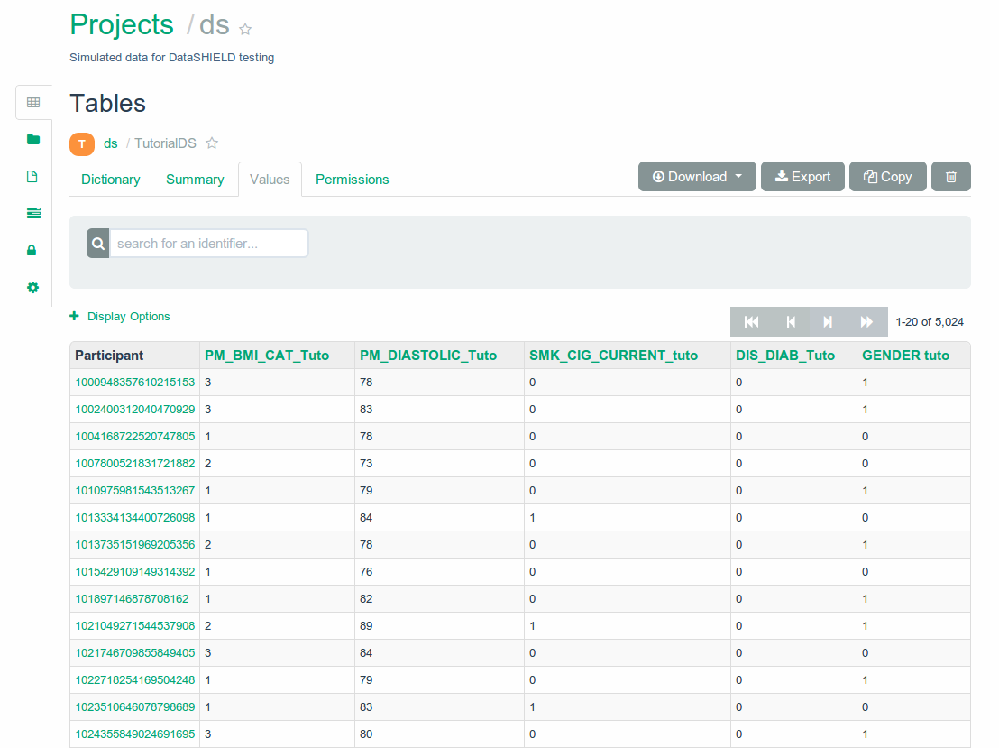
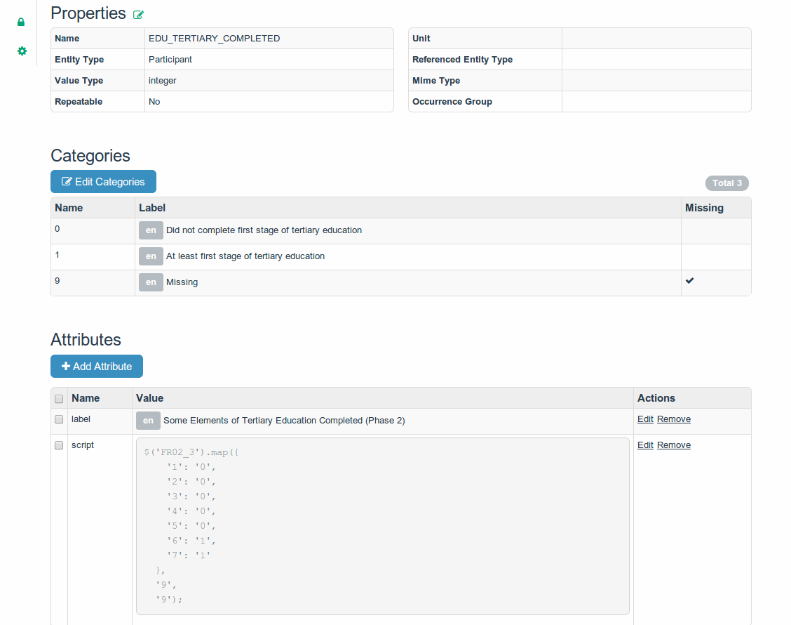

Opal

https://github.com/obiba/opal
Qu'est ce que c'est ?
Base de données
- Etudes épidémiologiques
- Biobanques
Collecte des données

- Sources multiple
- Données hétérogènes
- Normalise le format des data et metadata
Modèle
Table traditionnelle

- Colonne == variable
- Rangée == value sets pour chaque participant
- Cellule == valeur pour un participant pour une variable
Variable
- Décrit en ensemble de valeurs du même type
- A propos d'une entité (participant, instrument, etc.)
Catégorie
Décrit les valeurs possible d'une variable
Table
- Contient plusieurs variables
- Appartient à une datasource
Datasource (ou projet)
- Contient plusieurs tables
- Peut être persisté dans une base de donnée, un fichier dépendemment de la configuration de la datasource
Attribut
Ajoute de la meta information aux catégories, variables et datasources
- namespace
- name
- locale
- value
Variable dérivée
Variable dont les valeurs sont calculées depuis un script (JS)
Vue
- Table virtuelle
- Contient des variables dérivées
- Sous ensemble de une ou plusieurs tables
Relations

A quoi ça ressemble ?
Données
Statistiques

Vue & variables dérivées
Database

- Un projet persiste dans une seule BD
- Une BD peut stocker plusieurs projets
Implémentation des datasources
Plain SQL
- BD existante
- Limité

- Entity-attribute-value (EAV)
- Transactions
- Implémentation complexe

- Implémentation très simple
- Meilleur gestion des binaires
- Scalable
- Mais... pas de transactions
Web Services
- Opal <--> Opal
- Import / Export
Fichiers
 |
 |
Import / Export
Architecture Clients / Serveur
- Serveur REST
- Client GWT
- Client Python
- Client R
Architecture Serveur
Package Debian

Jetty embarqué

Avant Spring Boot ;-)
Base de données document embarquée

API REST
- JAX RS (RestEasy)
- Protocol Buffers
- Documentation de l'API (Swagger)
Sécurité

|
|
Confidentialité des participants

- ID internes
- Nouvelles ID pour chaque organisation qui accède aux données
Spatial realm
{domain}:{uri}:{permission}:{parent-permission}/{children-permission}
TABLE_ALL permission:
opal:/datasource/datasource_1/table/table_1:ALLrest:/datasource/datasource_1/table/table_1:*:GET/*
EDIT_VARIABLES permission:
opal:/datasource/datasource_1/table/table_1:EDIT_VARIABLESrest:/datasource/datasource_1/table/table_1:*:GET
rest:/datasource/datasource_1/table/table_1/variables:GET:GET/*
// so this permission won't be granted
// rest:/datasource/datasource_1/table/table_1/valuesetsElastic Search

|
|
Vues et Variables dérivées

 |
 |
Essayez Opal
- Username: administrator
- Password: password